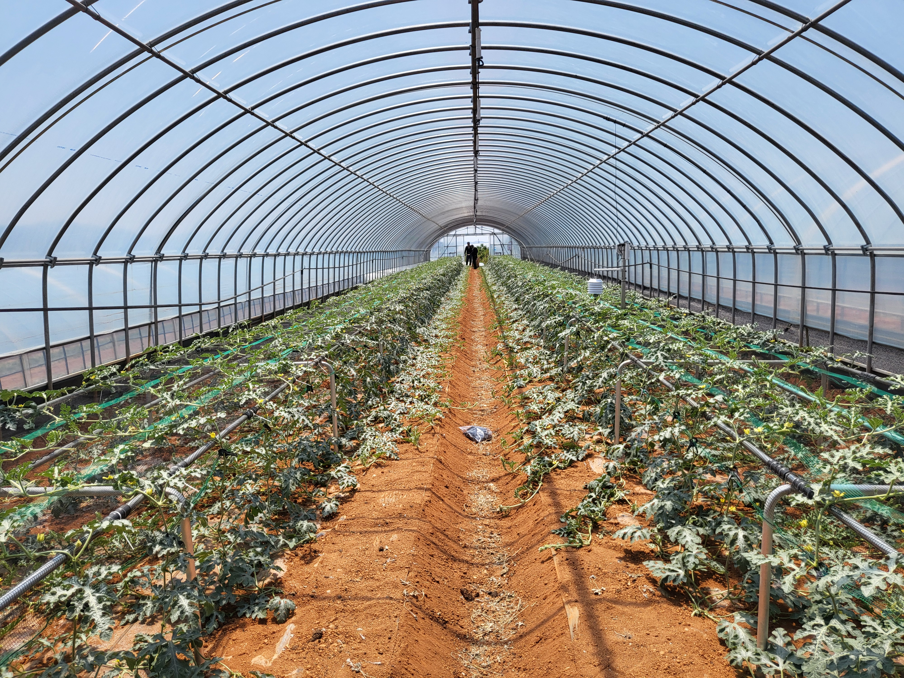
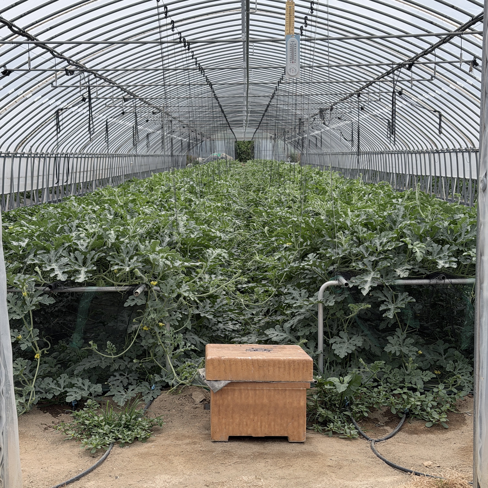
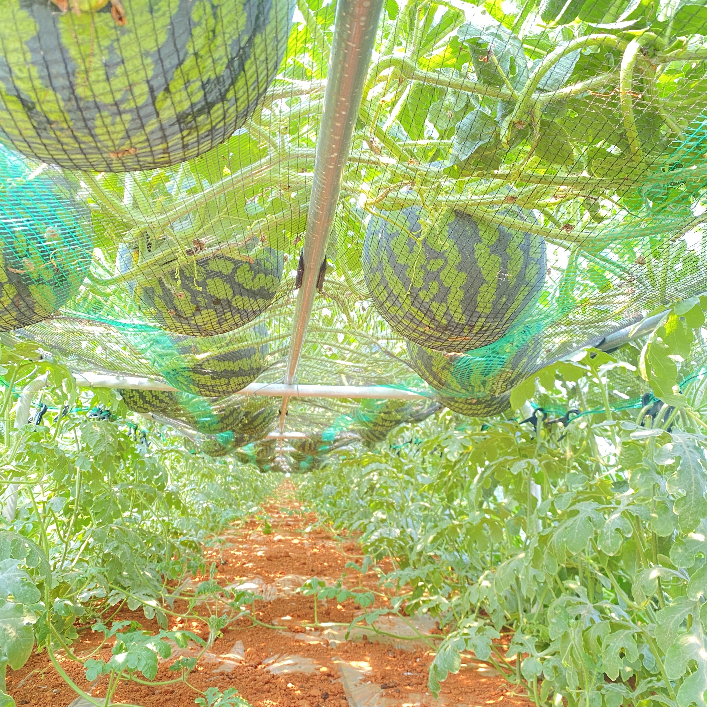
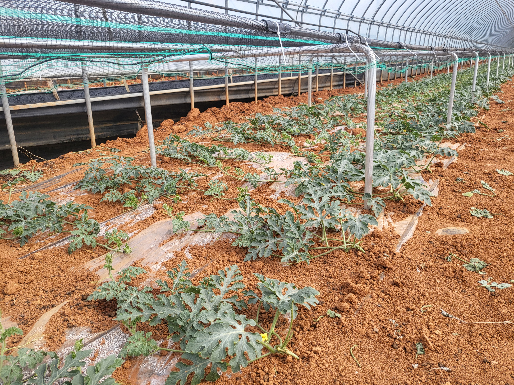
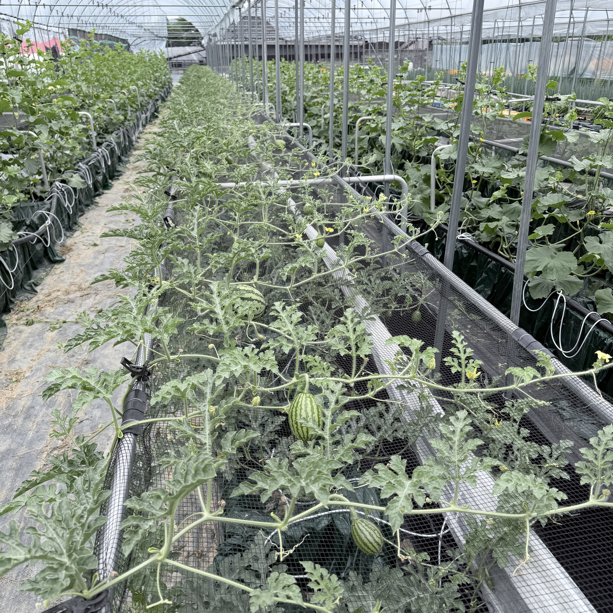

대과종 수박 생산성 극대화 & 생력화
데이터 기반 스마트 고상재배장치
포복(바닥) 재배의 한계를 뛰어넘어 노동 피로도를 60% 이상 절감하고, 정밀 데이터 관수와 메쉬 베드 구조로 8~10kg 특품 대과종 수박 360도 완벽 착색을 실현한 정부 실증 검증 솔루션입니다.
왜 수박
'고상(高床)재배'여야 하는가?
기존 바닥 포복재배의 고질적인 노동 문제와 연작 피해를 과학적으로 해결했습니다.
- 과도한 허리 굽힘 노동: 75도 이상 허리를 숙여 8~10kg 대과를 수확하여 농업인 근골격계 질환 다발
- 햇빛 차단 및 반점(황변) 발생: 바닥에 닿는 면의 착색 불량으로 과실을 일일이 뒤집어주는 과도한 노동 필요
- 토양 전염병 및 연작 장해: 덩굴마름병, 탄저병, 역병 등 토양 균 감염으로 매년 폐사율 증가
- 기후·침수 피해: 하우스 내 지면 과습 및 침수 시 뿌리 썩음 발생
- 인체공학적 직립 작업 (15도): 지상 85~110cm 베드 높이로 서서 편안하게 유인 및 수확 가능 (여성·고령농 최적화)
- 360도 전면 균일 착색 & 고당도: 공중 거치 구조로 과실 뒤집기 불필요, 햇빛 100% 수광으로 12 Brix 이상 균일 당도
- 연작 장해 100% 원천 차단: 독립형 메쉬 베드 격리 재배로 토양 병원균 오염 차단, 무농약 친환경 재배 가능
- 데이터 기반 정밀 점적 관수: 수분 스트레스 최소화 및 생육 단계별 최적 양액 공급으로 열과(터짐) 방지
📷 고상재배장치
현장 실증 사진
실제 제천·창원·고창 농가에 설치된 고상재배 생육 현장 및 특허 구조입니다.

충북 제천 실증농장 수박 생육
지상에서 띄운 공중 베드에서 대과종 수박이 활발하게 성육하는 실제 현장 모습입니다.

360도 전면 착색 & 특품 대과
바닥 황변 현상이 없고 일관되게 햇빛을 받아 8~10kg 이상 최상품으로 수확됩니다.

고하중 특수 알루미늄 지주대
수십 과실의 무게를 견디는 고내식성 합금 프레임과 메쉬 베드 정밀 공학 설계입니다.

서서 수행하는 인체공학적 유인작업
허리 피로도를 줄여 여성농 및 고령 농업인도 손쉽게 관리할 수 있습니다.
검증된 3대 독자 특허 &
실용신안 기술
10kg 이상 대과종 수박의 고하중을 완벽하게 지지하고 생육을 촉진하는 독보적 설계
모듈형 수박 수직재배장치
대과종 수박의 생육 단계에 맞춰 프레임을 유연하게 확장하고, 작물 하중을 안전하게 분산시키는 모듈러 결합형 고상 재배 구조 기술입니다.
스마트팜용 메쉬베드형 재배 시스템
대과종 박과류 전용 메쉬형 통기 베드를 적용하여 뿌리의 산소 흡수를 극대화하고, 잔여 양액의 신속한 배수로 뿌리 썩음을 방지합니다.
고하중 알루미늄 파형 지주대
파형 요철 및 블레이드 편평 압착부를 적용한 특수 알루미늄 지주대로, 가벼우면서도 수박 수십 과실의 초고하중을 견디는 특수 설계입니다.
정부 과제
현장 실증 결과 데이터
부산대학교 산학협력단 및 실증 농가에서 정밀 측정한 실제 수확 및 품질 지표입니다.
🍉 대과종 수박 실증 출하 결과 (제천 박영수 농가)
1차 출하 총 431수 중 7~10kg 대과 비중이 75% 이상을 기록하며 최상품 비율을 대폭 끌어올렸습니다.
💡 산학협력 연구책임자 종합 평가
"지상 1m 고상 메쉬 베드 구조를 통해 바닥 닿는 부위의 황변 현상이 완전히 제거되었으며, 서서 작업하는 인체공학적 환경 구축으로 수박 재배 농가의 최대 난제인 노동력 부족 문제를 실질적으로 해결함."
- 부산대학교 원예생명과학과 안성광 교수 연구팀전국 4대 권역 거점 실증 농가 네트워크
2025년 4개 농가에서 2026년 9개 농가로 확대 검증된 고상재배장치 현장
이든팜 (김기민 농가)
ICT 스마트 환경 제어와 결합된 고상재배 실증으로 멜론 및 수박의 주년 고품질 생산성 검증 완료
고창 대규모 실증단지 (김윤환 농가)
국내 최대 규모 수박 주산지 고창에서 대면적 고상재배의 경제성 및 생력화 효과 대규모 실증
제천 봉양 실증농장 (박영수 농가)
2025-2026 연차별 정밀 관수량 데이터 측정 및 1차 출하 431수 전량 특품 판정 기록 달성
안성 실증농장 (장미연 농가)
수도권 근교 시설 원예 농가 맞춤형 다단 수직 고상재배 모델 현장 검증 및 보급 교육 거점
그린씨드 고상재배장치 표준 규격서
하우스 규격과 재배 작목(대과종 수박, 멜론 등)에 따라 맞춤 설계 및 시공 지원
| 구분 항목 | 수박 전용 고하중 표준형 (GS-Watermelon-100) | 멜론·엽채 겸용 모듈형 (GS-Multi-200) |
|---|---|---|
| 베드 높이 (지상고) | 850mm ~ 1,100mm (작업자 체형 맞춤 인체공학 조절) | 900mm ~ 1,200mm (다단 호환 구조) |
| 베드 구조 및 소재 | 통기성 특수 메쉬 베드 + 고내식성 용융아연 알루미늄 | 경량 알루미늄 프로파일 + UV 차단 특수 방수 패브릭 |
| 허용 지지 하중 | 과실당 10~15kg 대과종 수직 하중 완벽 지지 | 과실당 3~5kg 연속 거치 설계 |
| 관수 및 배수 방식 | 압력보상형 정밀 점적 단추 + 순환형 회수 드레인 | 마이크로 점적관수 + 자동 수분 센서 연동 |
| 적용 인증 및 특허 | 등록 특허 제 10-3017483 호 / 실용신안 출원 적용 | 출원 특허 AP070909 스마트팜 메쉬베드 적용 |
지자체 보조사업 ·
스마트팜 시범사업
도입 문의
부산대학교 산학협력 연구보고서 요약본 및 맞춤형 견적 제안서를 신속하게 제공해 드립니다.